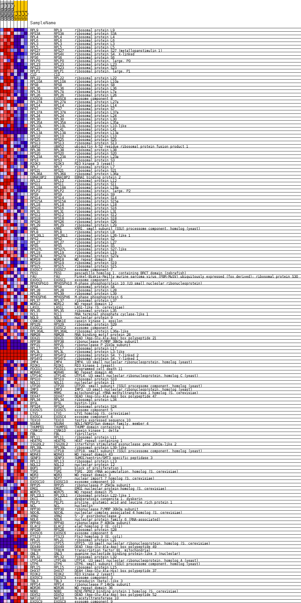
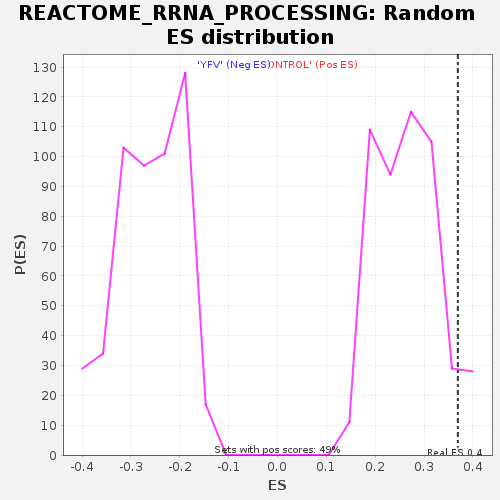

Profile of the Running ES Score & Positions of GeneSet Members on the Rank Ordered List
| Dataset | MATRIZ_GSE99081_collapsed_to_symbols.gsea_CLASE_99081.cls#CONTROL_versus_YFV |
| Phenotype | gsea_CLASE_99081.cls#CONTROL_versus_YFV |
| Upregulated in class | CONTROL |
| GeneSet | REACTOME_RRNA_PROCESSING |
| Enrichment Score (ES) | 0.3689988 |
| Normalized Enrichment Score (NES) | 1.3891897 |
| Nominal p-value | 0.057026476 |
| FDR q-value | 1.0 |
| FWER p-Value | 1.0 |
| SYMBOL | TITLE | RANK IN GENE LIST | RANK METRIC SCORE | RUNNING ES | CORE ENRICHMENT | |
|---|---|---|---|---|---|---|
| 1 | RPL9 | ribosomal protein L9 | 39 | 1.536 | 0.0232 | Yes |
| 2 | RPS3A | ribosomal protein S3A | 243 | 1.002 | 0.0272 | Yes |
| 3 | RPL4 | ribosomal protein L4 | 245 | 1.000 | 0.0438 | Yes |
| 4 | RPL6 | ribosomal protein L6 | 258 | 0.994 | 0.0596 | Yes |
| 5 | RPL3 | ribosomal protein L3 | 271 | 0.979 | 0.0752 | Yes |
| 6 | RPL5 | ribosomal protein L5 | 331 | 0.928 | 0.0870 | Yes |
| 7 | RPS27 | ribosomal protein S27 (metallopanstimulin 1) | 531 | 0.815 | 0.0882 | Yes |
| 8 | RPS4X | ribosomal protein S4, X-linked | 540 | 0.811 | 0.1012 | Yes |
| 9 | RPS6 | ribosomal protein S6 | 556 | 0.801 | 0.1136 | Yes |
| 10 | RPLP0 | ribosomal protein, large, P0 | 638 | 0.765 | 0.1213 | Yes |
| 11 | RPL23 | ribosomal protein L23 | 694 | 0.744 | 0.1303 | Yes |
| 12 | RPS23 | ribosomal protein S23 | 783 | 0.708 | 0.1366 | Yes |
| 13 | RPLP1 | ribosomal protein, large, P1 | 785 | 0.707 | 0.1483 | Yes |
| 14 | C1D | - | 797 | 0.703 | 0.1593 | Yes |
| 15 | RPL22 | ribosomal protein L22 | 823 | 0.695 | 0.1694 | Yes |
| 16 | RPL10A | ribosomal protein L10a | 1031 | 0.636 | 0.1671 | Yes |
| 17 | RPS8 | ribosomal protein S8 | 1045 | 0.631 | 0.1768 | Yes |
| 18 | RPL36 | ribosomal protein L36 | 1103 | 0.618 | 0.1835 | Yes |
| 19 | RPL7A | ribosomal protein L7a | 1114 | 0.617 | 0.1932 | Yes |
| 20 | RPL26 | ribosomal protein L26 | 1288 | 0.575 | 0.1920 | Yes |
| 21 | EXOSC8 | exosome component 8 | 1336 | 0.565 | 0.1985 | Yes |
| 22 | RPL27A | ribosomal protein L27a | 1398 | 0.551 | 0.2039 | Yes |
| 23 | RPL14 | ribosomal protein L14 | 1446 | 0.539 | 0.2099 | Yes |
| 24 | RPS7 | ribosomal protein S7 | 1477 | 0.534 | 0.2170 | Yes |
| 25 | RPL37A | ribosomal protein L37a | 1562 | 0.517 | 0.2203 | Yes |
| 26 | RPL24 | ribosomal protein L24 | 1574 | 0.514 | 0.2282 | Yes |
| 27 | RPL30 | ribosomal protein L30 | 1608 | 0.507 | 0.2346 | Yes |
| 28 | RPL35A | ribosomal protein L35a | 1658 | 0.502 | 0.2399 | Yes |
| 29 | RPL10L | ribosomal protein L10-like | 1670 | 0.501 | 0.2476 | Yes |
| 30 | RPL41 | ribosomal protein L41 | 1720 | 0.500 | 0.2529 | Yes |
| 31 | RPL13A | ribosomal protein L13a | 1740 | 0.500 | 0.2600 | Yes |
| 32 | RPL10 | ribosomal protein L10 | 1836 | 0.500 | 0.2624 | Yes |
| 33 | RPS25 | ribosomal protein S25 | 1908 | 0.495 | 0.2663 | Yes |
| 34 | RPS13 | ribosomal protein S13 | 1927 | 0.494 | 0.2734 | Yes |
| 35 | UBA52 | ubiquitin A-52 residue ribosomal protein fusion product 1 | 1969 | 0.488 | 0.2790 | Yes |
| 36 | RPL38 | ribosomal protein L38 | 1981 | 0.487 | 0.2864 | Yes |
| 37 | RPS20 | ribosomal protein S20 | 1985 | 0.486 | 0.2943 | Yes |
| 38 | RPL23A | ribosomal protein L23a | 2018 | 0.480 | 0.3003 | Yes |
| 39 | RPS3 | ribosomal protein S3 | 2085 | 0.470 | 0.3040 | Yes |
| 40 | RIOK3 | RIO kinase 3 (yeast) | 2185 | 0.458 | 0.3055 | Yes |
| 41 | RPL7 | ribosomal protein L7 | 2215 | 0.454 | 0.3113 | Yes |
| 42 | RPS21 | ribosomal protein S21 | 2236 | 0.450 | 0.3175 | Yes |
| 43 | RPL36A | ribosomal protein L36a | 2245 | 0.449 | 0.3245 | Yes |
| 44 | EBNA1BP2 | EBNA1 binding protein 2 | 2368 | 0.430 | 0.3241 | Yes |
| 45 | RPL12 | ribosomal protein L12 | 2400 | 0.425 | 0.3292 | Yes |
| 46 | RPS11 | ribosomal protein S11 | 2405 | 0.425 | 0.3361 | Yes |
| 47 | RPL18A | ribosomal protein L18a | 2439 | 0.421 | 0.3410 | Yes |
| 48 | RPLP2 | ribosomal protein, large, P2 | 2474 | 0.416 | 0.3458 | Yes |
| 49 | RPS9 | ribosomal protein S9 | 2713 | 0.381 | 0.3374 | Yes |
| 50 | RPS14 | ribosomal protein S14 | 2782 | 0.370 | 0.3393 | Yes |
| 51 | RPS15A | ribosomal protein S15a | 2897 | 0.353 | 0.3381 | Yes |
| 52 | RPL18 | ribosomal protein L18 | 2912 | 0.352 | 0.3431 | Yes |
| 53 | RPS16 | ribosomal protein S16 | 2921 | 0.351 | 0.3484 | Yes |
| 54 | RPL31 | ribosomal protein L31 | 2998 | 0.343 | 0.3494 | Yes |
| 55 | RPS12 | ribosomal protein S12 | 3083 | 0.334 | 0.3497 | Yes |
| 56 | RPS18 | ribosomal protein S18 | 3094 | 0.332 | 0.3546 | Yes |
| 57 | RPS26 | ribosomal protein S26 | 3104 | 0.332 | 0.3596 | Yes |
| 58 | RPL29 | ribosomal protein L29 | 3224 | 0.317 | 0.3575 | Yes |
| 59 | KRR1 | KRR1, small subunit (SSU) processome component, homolog (yeast) | 3237 | 0.316 | 0.3620 | Yes |
| 60 | RPL8 | ribosomal protein L8 | 3265 | 0.313 | 0.3656 | Yes |
| 61 | RPL26L1 | ribosomal protein L26-like 1 | 3380 | 0.301 | 0.3635 | Yes |
| 62 | RPS2 | ribosomal protein S2 | 3429 | 0.296 | 0.3654 | Yes |
| 63 | RPL27 | ribosomal protein L27 | 3451 | 0.294 | 0.3690 | Yes |
| 64 | RPS5 | ribosomal protein S5 | 3819 | 0.257 | 0.3504 | No |
| 65 | RPS27L | ribosomal protein S27-like | 3849 | 0.254 | 0.3529 | No |
| 66 | RPL19 | ribosomal protein L19 | 3896 | 0.251 | 0.3542 | No |
| 67 | RPS27A | ribosomal protein S27a | 4134 | 0.232 | 0.3433 | No |
| 68 | WDR18 | WD repeat domain 18 | 4806 | 0.174 | 0.3045 | No |
| 69 | RPS19 | ribosomal protein S19 | 4912 | 0.165 | 0.3007 | No |
| 70 | RPS15 | ribosomal protein S15 | 4986 | 0.160 | 0.2988 | No |
| 71 | EXOSC7 | exosome component 7 | 5022 | 0.157 | 0.2992 | No |
| 72 | PES1 | pescadillo homolog 1, containing BRCT domain (zebrafish) | 5034 | 0.156 | 0.3011 | No |
| 73 | FAU | Finkel-Biskis-Reilly murine sarcoma virus (FBR-MuSV) ubiquitously expressed (fox derived); ribosomal protein S30 | 5050 | 0.154 | 0.3028 | No |
| 74 | EXOSC1 | exosome component 1 | 5080 | 0.151 | 0.3035 | No |
| 75 | MPHOSPH10 | M-phase phosphoprotein 10 (U3 small nucleolar ribonucleoprotein) | 5215 | 0.136 | 0.2974 | No |
| 76 | RPSA | ribosomal protein SA | 5235 | 0.135 | 0.2985 | No |
| 77 | RPL28 | ribosomal protein L28 | 5254 | 0.133 | 0.2996 | No |
| 78 | RPL39 | ribosomal protein L39 | 5334 | 0.127 | 0.2968 | No |
| 79 | MPHOSPH6 | M-phase phosphoprotein 6 | 5348 | 0.126 | 0.2981 | No |
| 80 | RPL37 | ribosomal protein L37 | 5525 | 0.111 | 0.2890 | No |
| 81 | WDR12 | WD repeat domain 12 | 5530 | 0.111 | 0.2906 | No |
| 82 | LAS1L | LAS1-like (S. cerevisiae) | 5918 | 0.083 | 0.2679 | No |
| 83 | RPL35 | ribosomal protein L35 | 6021 | 0.074 | 0.2628 | No |
| 84 | RCL1 | RNA terminal phosphate cyclase-like 1 | 6205 | 0.060 | 0.2524 | No |
| 85 | NOL9 | nucleolar protein 9 | 6549 | 0.036 | 0.2316 | No |
| 86 | CSNK1E | casein kinase 1, epsilon | 6598 | 0.032 | 0.2292 | No |
| 87 | RPS29 | ribosomal protein S29 | 6686 | 0.027 | 0.2242 | No |
| 88 | EXOSC2 | exosome component 2 | 6756 | 0.023 | 0.2203 | No |
| 89 | RPL36AL | ribosomal protein L36a-like | 6788 | 0.022 | 0.2187 | No |
| 90 | RBM28 | RNA binding motif protein 28 | 6795 | 0.021 | 0.2187 | No |
| 91 | DDX21 | DEAD (Asp-Glu-Ala-Asp) box polypeptide 21 | 6917 | 0.015 | 0.2114 | No |
| 92 | RPP38 | ribonuclease P/MRP 38kDa subunit | 7040 | 0.008 | 0.2040 | No |
| 93 | RPP21 | ribonuclease P 21kDa subunit | 7199 | 0.000 | 0.1941 | No |
| 94 | RPL17 | ribosomal protein L17 | 7410 | 0.000 | 0.1811 | No |
| 95 | RPL3L | ribosomal protein L3-like | 7592 | 0.000 | 0.1698 | No |
| 96 | RPS4Y2 | ribosomal protein S4, Y-linked 2 | 8583 | 0.000 | 0.1082 | No |
| 97 | RPS4Y1 | ribosomal protein S4, Y-linked 1 | 8584 | 0.000 | 0.1082 | No |
| 98 | IMP4 | IMP4, U3 small nucleolar ribonucleoprotein, homolog (yeast) | 9613 | -0.008 | 0.0444 | No |
| 99 | RIOK1 | RIO kinase 1 (yeast) | 9751 | -0.014 | 0.0361 | No |
| 100 | PDCD11 | programmed cell death 11 | 9791 | -0.016 | 0.0339 | No |
| 101 | WDR46 | WD repeat domain 46 | 9844 | -0.019 | 0.0310 | No |
| 102 | UTP14C | UTP14, U3 small nucleolar ribonucleoprotein, homolog C (yeast) | 10270 | -0.043 | 0.0053 | No |
| 103 | RPS10 | ribosomal protein S10 | 10390 | -0.051 | -0.0013 | No |
| 104 | NOL11 | nucleolar protein 11 | 10637 | -0.070 | -0.0154 | No |
| 105 | UTP20 | UTP20, small subunit (SSU) processome component, homolog (yeast) | 10653 | -0.071 | -0.0152 | No |
| 106 | IMP3 | IMP3, U3 small nucleolar ribonucleoprotein, homolog (yeast) | 10757 | -0.081 | -0.0202 | No |
| 107 | MRM1 | mitochondrial rRNA methyltransferase 1 homolog (S. cerevisiae) | 10812 | -0.086 | -0.0222 | No |
| 108 | DDX47 | DEAD (Asp-Glu-Ala-Asp) box polypeptide 47 | 11094 | -0.109 | -0.0378 | No |
| 109 | RPL34 | ribosomal protein L34 | 11119 | -0.112 | -0.0375 | No |
| 110 | BYSL | bystin-like | 11142 | -0.114 | -0.0369 | No |
| 111 | RPS24 | ribosomal protein S24 | 11178 | -0.118 | -0.0371 | No |
| 112 | EXOSC5 | exosome component 5 | 11211 | -0.121 | -0.0371 | No |
| 113 | LTV1 | LTV1 homolog (S. cerevisiae) | 11342 | -0.133 | -0.0430 | No |
| 114 | EXOSC4 | exosome component 4 | 11388 | -0.137 | -0.0435 | No |
| 115 | TEX10 | testis expressed sequence 10 | 11427 | -0.142 | -0.0435 | No |
| 116 | NSUN4 | NOL1/NOP2/Sun domain family, member 4 | 11511 | -0.148 | -0.0462 | No |
| 117 | THUMPD1 | THUMP domain containing 1 | 11544 | -0.150 | -0.0457 | No |
| 118 | CSNK1D | casein kinase 1, delta | 11563 | -0.152 | -0.0443 | No |
| 119 | FBL | fibrillarin | 11662 | -0.161 | -0.0477 | No |
| 120 | RPL11 | ribosomal protein L11 | 11759 | -0.170 | -0.0508 | No |
| 121 | HEATR1 | HEAT repeat containing 1 | 11806 | -0.175 | -0.0508 | No |
| 122 | ISG20L2 | interferon stimulated exonuclease gene 20kDa-like 2 | 11834 | -0.177 | -0.0495 | No |
| 123 | RPL39L | ribosomal protein L39-like | 11855 | -0.179 | -0.0478 | No |
| 124 | UTP18 | UTP18, small subunit (SSU) processome component, homolog (yeast) | 11912 | -0.185 | -0.0482 | No |
| 125 | WDR43 | WD repeat domain 43 | 12018 | -0.195 | -0.0515 | No |
| 126 | SENP3 | SUMO1/sentrin/SMT3 specific peptidase 3 | 12061 | -0.198 | -0.0508 | No |
| 127 | RPL13 | ribosomal protein L13 | 12065 | -0.199 | -0.0476 | No |
| 128 | NOL12 | nucleolar protein 12 | 12100 | -0.203 | -0.0464 | No |
| 129 | BOP1 | block of proliferation 1 | 12105 | -0.203 | -0.0432 | No |
| 130 | TSR1 | TSR1, 20S rRNA accumulation, homolog (S. cerevisiae) | 12121 | -0.205 | -0.0408 | No |
| 131 | WDR3 | WD repeat domain 3 | 12268 | -0.221 | -0.0462 | No |
| 132 | NIP7 | nuclear import 7 homolog (S. cerevisiae) | 12274 | -0.222 | -0.0428 | No |
| 133 | EXOSC10 | exosome component 10 | 12313 | -0.226 | -0.0414 | No |
| 134 | RPP25 | ribonuclease P 25kDa subunit | 12321 | -0.226 | -0.0381 | No |
| 135 | EMG1 | EMG1 nucleolar protein homolog (S. cerevisiae) | 12348 | -0.229 | -0.0359 | No |
| 136 | WDR75 | WD repeat domain 75 | 12362 | -0.230 | -0.0328 | No |
| 137 | RPL22L1 | ribosomal protein L22-like 1 | 12387 | -0.232 | -0.0305 | No |
| 138 | DKC1 | dyskeratosis congenita 1, dyskerin | 12440 | -0.237 | -0.0298 | No |
| 139 | PELP1 | proline, glutamic acid and leucine rich protein 1 | 12448 | -0.238 | -0.0262 | No |
| 140 | NCL | nucleolin | 12558 | -0.250 | -0.0288 | No |
| 141 | RPP30 | ribonuclease P/MRP 30kDa subunit | 12994 | -0.300 | -0.0509 | No |
| 142 | NOC4L | nucleolar complex associated 4 homolog (S. cerevisiae) | 13098 | -0.314 | -0.0521 | No |
| 143 | XRN2 | 5'-3' exoribonuclease 2 | 13121 | -0.317 | -0.0482 | No |
| 144 | NOL6 | nucleolar protein family 6 (RNA-associated) | 13122 | -0.317 | -0.0429 | No |
| 145 | RPP40 | ribonuclease P 40kDa subunit | 13245 | -0.333 | -0.0449 | No |
| 146 | ELAC2 | elaC homolog 2 (E. coli) | 13336 | -0.342 | -0.0448 | No |
| 147 | RPS28 | ribosomal protein S28 | 13382 | -0.348 | -0.0418 | No |
| 148 | EXOSC6 | exosome component 6 | 13717 | -0.396 | -0.0560 | No |
| 149 | FTSJ3 | FtsJ homolog 3 (E. coli) | 14183 | -0.479 | -0.0770 | No |
| 150 | RPL21 | ribosomal protein L21 | 14215 | -0.485 | -0.0708 | No |
| 151 | UTP15 | UTP15, U3 small nucleolar ribonucleoprotein, homolog (S. cerevisiae) | 14224 | -0.487 | -0.0632 | No |
| 152 | DDX49 | DEAD (Asp-Glu-Ala-Asp) box polypeptide 49 | 14326 | -0.499 | -0.0612 | No |
| 153 | TFB1M | transcription factor B1, mitochondrial | 14566 | -0.509 | -0.0675 | No |
| 154 | GNL3 | guanine nucleotide binding protein-like 3 (nucleolar) | 14587 | -0.513 | -0.0602 | No |
| 155 | RPL32 | ribosomal protein L32 | 14623 | -0.523 | -0.0537 | No |
| 156 | UTP14A | UTP14, U3 small nucleolar ribonucleoprotein, homolog A (yeast) | 14754 | -0.554 | -0.0526 | No |
| 157 | UTP6 | UTP6, small subunit (SSU) processome component, homolog (yeast) | 14795 | -0.566 | -0.0456 | No |
| 158 | RPL15 | ribosomal protein L15 | 14863 | -0.582 | -0.0401 | No |
| 159 | DHX37 | DEAH (Asp-Glu-Ala-His) box polypeptide 37 | 14985 | -0.618 | -0.0373 | No |
| 160 | RIOK2 | RIO kinase 2 (yeast) | 15019 | -0.630 | -0.0289 | No |
| 161 | EXOSC3 | exosome component 3 | 15113 | -0.658 | -0.0237 | No |
| 162 | TBL3 | transducin (beta)-like 3 | 15123 | -0.663 | -0.0132 | No |
| 163 | RPP14 | ribonuclease P 14kDa subunit | 15147 | -0.672 | -0.0035 | No |
| 164 | WDR36 | WD repeat domain 36 | 15291 | -0.733 | -0.0002 | No |
| 165 | NOB1 | NIN1/RPN12 binding protein 1 homolog (S. cerevisiae) | 15486 | -0.823 | 0.0015 | No |
| 166 | DDX52 | DEAD (Asp-Glu-Ala-Asp) box polypeptide 52 | 15533 | -0.847 | 0.0127 | No |
| 167 | NAT10 | N-acetyltransferase 10 | 15603 | -0.876 | 0.0230 | No |
| 168 | EXOSC9 | exosome component 9 | 15703 | -0.988 | 0.0333 | No |

